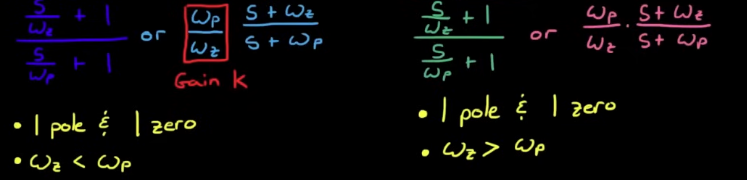
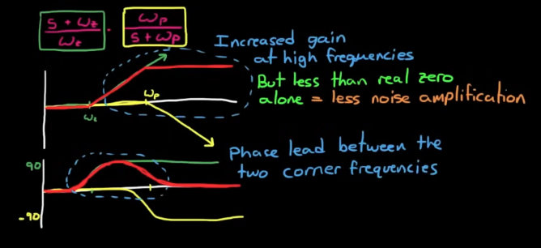
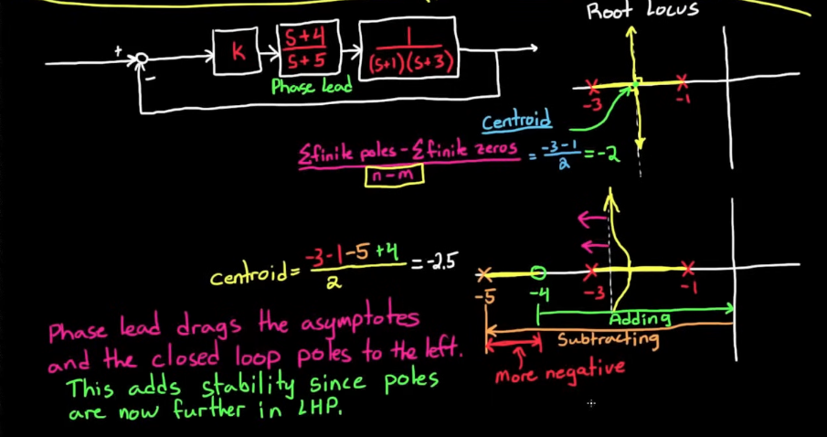
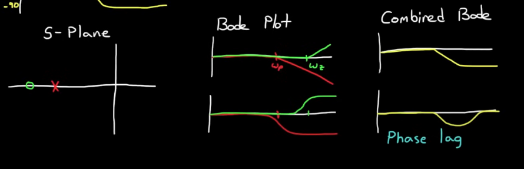
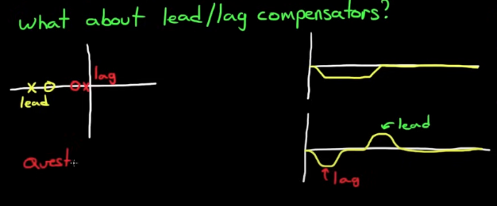

Compensators
Lead, Lag, and Lead-Lag Compensators
Phase Margin
Definition
Phase margin is a measure of stability for a feedback control system. It represents the amount of phase shift, expressed in degrees, that can be added to the open-loop transfer function before the system reaches the point of instability, specifically where the Bode plot crosses the -180° line at the gain crossover frequency.
Phase Margin Calculation:
\[\text{Phase Margin} = 180^\circ + \angle G(j\omega_{gc})H(j\omega_{gc})\]- \(\omega_{gc}\) is the gain crossover frequency — the frequency at which the magnitude of the open-loop transfer function \(|G(j\omega)H(j\omega)| = 1\) (i.e., 0 dB).
- \(\angle G(j\omega)H(j\omega)\) is the phase of the open-loop transfer function at that frequency.
Phase Lead and Lag
A zero (s) adds phase while pole (1/s) subtracts phase.
Phase lead compensators add positive phase to the output, so the output leads the input.
Phase lag compensators add negative phase to the output, so the output lags behind the input.
Phase Lead
Example: Differentiator
input: sin(t) output: cos(t)
Cosine is leading sine by 90 degrees -> phase lead
A differentiator circuit introduces a positive phase shift of 90 degrees
Phase Lag
Example: Integrator
Lead Lag Compensator Formulae

Lead Compensator
Formula
\(\frac{\omega_p}{\omega_z} * \frac{s+\omega_z}{s+\omega_p}\) or \(\frac{s+\omega_z}{\omega_z} * \frac{\omega_p}{s+\omega_p}\)
- 1 pole and 1 zero
- \(\omega_z < \omega_p\)
Bode Plot

- Lead compensators increase gain at high frequencies but not as much as a real zero = less noise amplification
- Lead compensator adds phase (phase lead) between the corner frequencies \(\omega_z \text{ and } \omega_p\) and nowhere else. By adjusting the corner frequencies, you can move the phase lead around
Intuition

-
Lead compensator (phase lead) drags the asymptotes and the closed loop poles to the left, which adds stability.
- Lead compensated system is more stable and has a faster rise time.
- Lead compensator shapes the root locus
-
Lag compensator is typically not used for dragging asymptotes closer to imaginary axis, but rather for reducing steady-state errors.
- We want to reduce steady-state errors without changing the pole locations
- Lag compensator doesn’t shape the root locus plot
Notes on Lead Compensators
- A lead compensator doesn’t guarantee stability
- Lead compensator can be tried if PID doesn’t work
- Faster response means responding to noise
Lag Compensator
Formula
\(\frac{\omega_p}{\omega_z} * \frac{s+\omega_z}{s+\omega_p}\) or \(\frac{s+\omega_z}{\omega_z} * \frac{\omega_p}{s+\omega_p}\)
- 1 pole and 1 zero
- \(\omega_z < \omega_p\)
Lag Compensator Bode Plot

How does Lag compensator reduce SSE
Lag compensator can only reduce SSE but not eliminate it. To eliminate, change system Type.
Lag Compensator Step Response

\(E_{ssc}\) is the desired steady-state error given by spec.
\(\frac{z}{p}\) is the zero-to-pole ratio and can be calculated. However, the exact location needs further analysis
Where should you place the zero and pole given zero-to-pole ratio
A locus exists where the angles add to 180 degrees. We do NOT want to move the dominant pole much with lag compensators. We want to place them in such a way that the angles of the compensator zero and pole cancel each other out.
-
If we place the zero and pole to the left of the dominant poles, the difference between the two angles will be significant, which will drag the dominant poles to the right (undesirable behavior).
-
If we place the zero and pole close to the imaginary axis but keep zero-to-pole ratio \(\frac{z}{p}\)
Rule of Thumb
- Maintain \(\frac{z}{p}\) needed for steady-state error
- Place lag compensator as close to imaginary axis as possible to reduce moving the roots.
- Not too close since it’s hard to implement
- Zero should be \(Z_{lag} = \frac{\text{real(Dominant Pole)}}{50}\)
Lead Lag Compensator

Designing a Lead-Lag compensator with Root Locus
Designing Lead first
-
Decide on desired poles given criteria (making the system appear second order) (e.g. rise time, damping ratio)
-
Place lead zero in a position that minimizes effect on dominant closed-loop poles
-
Keep zero left of closed-loop poles OR
-
Cancel an existing system pole
-
-
Find where lead pole needs to be placed to get desired poles on root locus
-
For a desired pole (either one of the complex conjugate, answers are the same), ignoring its complex conjugate pole in the following formula: \(\Sigma \theta_z - \Sigma \theta_p = -180^\circ\)
-
Use trigonometry to figure out \(l\) and \(\theta\), distance between each open-loop pole and zero and angle between the line that connects a desired pole to each of the open-loop poles or zeros and the positive x-axis, respectively.
-
-
Find what gain (K) this desired pole corresponds to:
-
\(K = \frac{\Pi L_{poles}}{\Pi L_{zeroes}}\), where \(\Pi\) is the multiplication function OR
- \[K = \frac{1}{|GH|}\]
-
Designing Lag
- Calculate SSE with lead controller using Final Value Theorem and determining the type of the system
- Lag compensator will reduce SSE
- Find ratio \(\frac{z}{p}\) from SSE criteria where \(e_{lead\_lag}\) is the desired SSE given by spec.
- \[\frac{e_{lead}}{e_{lead\_lag}} = \frac{z}{p}\]
-
Pick \(P_{lag}\) or \(Z_{lag}\) so it is close to the origin, typically \(Z_{lag}\).
- Calculate \(P_{lag}\) given the ratio \(\frac{z}{p}\). Should end up with \(Z_{lag}\) and \(P_{lag}\) very close to each other to have pole-zero cancellation and an almost unchanged root locus plot
Dominant poles and System Requirement Constraints
Many system requirements pertaining to transient response (rise time, overshoot, settling time) are only well-defined for a second-order system. It is therefore important to determine where the dominant poles should reside to resemble a second-order system.
Pole Placement
-
If the dominant poles are to the left of the uncompensated root-locus, then lead must be added to the system.
-
If the dominant poles are to the right of the uncompensated root-locus, then lag must be added to the system.